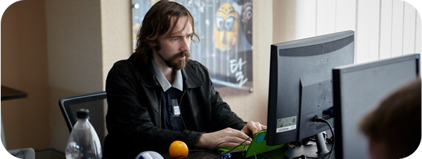
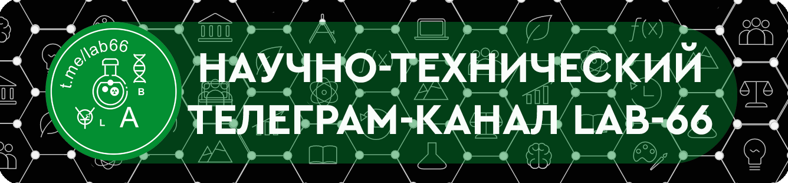
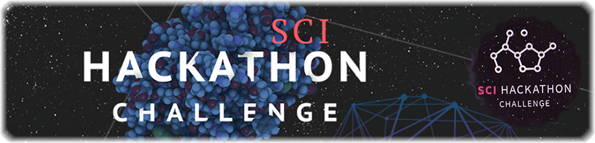
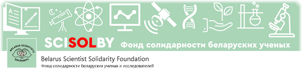
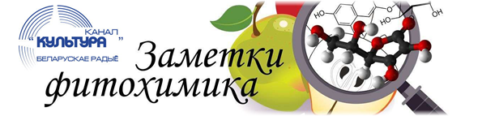

Independent Scientist. Certified Researcher in Surface&Interface Chemistry
(GoogleScholar/eLibrary ID 7955-7650).
Inventor (TIPS). Innovative Expert.
Science journalist (HABR/MEDIUM).
Citizen science evangelist (BY).
FOLLOW SOCIAL:
PUBLIC ACTIVITIES:

Public channel (~personal sci-tech blog) in Telegram (@lab66)

First Belarussian Scientific Hackathon SciHackathon-2017 [1][2][3][4][5]

Belarus Scientist Solidarity Foundation (follow: FB, Linkedin, Telegram)

A stories about fruits/vegetables on belarussian radio (see on SoundCloud)
DONATE: WebMoney 650377296748-YandexMoney-Patreon-Ko-Fi-Liberapay
CRYPTO DONATE:
_ BTC: 3QRyF2UwcKECVtk1Ep8scndmCBoRATvZkx
_ BCH: qrz4zqrue7lml0un42j9lalw4863zz8tnvhxt8p5z8
_ ETC: 0x3Aa313FA17444db70536A0ec5493F3aaA49C9CBf
_ XRP: rhh1ctaPkU8PFGzzrAXE2Nsuo2iAnV9Cua
_ LTC: LTRNfB5Qscs16CSBV5fQLiZx9meeR7EZmo
Siarhei Besarab © Minsk. Belarus. 2020
|